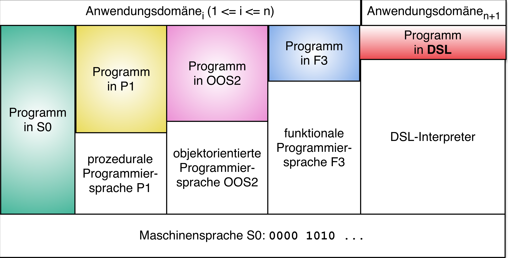
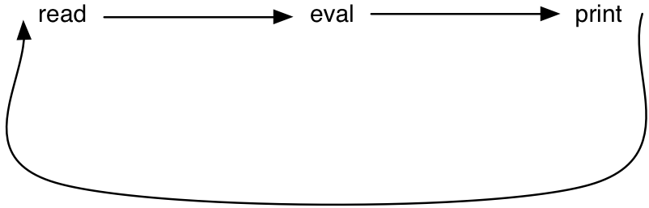

Einstieg
Reaktive Programmierung
Ziele
- Kennenlernen wichtiger Grundbegriffe der (funktional-)reaktiven Programmierung
- Studium eines Beispiels einer reaktiven Anwendung geschrieben in ClojureScript
- Darum zuvor ein Crash-Kurs in Clojure/ClojureScript
Grundbegriffe
- Was bedeutet „reaktiv” in Reaktiver Programmierung?
- Warum sollte man Anwendungen funktional programmieren?
- Was ist eine Einseiten-Webanwendung (single page application)?
- Was ist eine domänenspezifische Sprache (domain specific language, DSL)?
Was bedeutet „reaktiv” in Reaktiver Programmierung?
- Funktional-reaktive Programmierung keine neue Idee
[Wan2000Functional].
- Nutzung einer internen (Haskell) DSL
- Schwerpunkt der Betrachtung: Umgang mit kontinuierlichen Vorgängen (sog. behaviors)
- In unserem Modul geht es in erster Linie um die Abstraktion von diskreten Ereignissen
- Die Unterschiede werden in der Lektion Unterschied von FRP zu Rx genauer erläutert.
- Populär geworden durch das Javascript-Framework React von Facebook
- Bevorzugte Verwendung für die Erstellung von Einzelseiten-Webanwendungen (single page applications)
Bedeutung der Programmierparadigmen
- Reaktive Programmierung kann als orthogonal zu den klassischen
Programmierparadigmen betrachtet werden.
- Es sind z. B. objektorientiert oder funktionale Vorgehensweisen denkbar.
- Näheres dazu in der Lektion Reactive mit nicht (rein) funktionalen Sprachen
„Schönes“ Beispiel: Das Buch Rx.NET in Action [dresher2017rx.net]
„The reactive programming paradigm has gained increasing popularity in recent years as a model that aims to simplify the implementation of event-driven applications and the execution of asynchronous code. Reactive programming concentrates on the propagation of changes and their effects—simply put, how to react to changes and create data flows that depend on them.“
- Programmiersprache: C#
- Auszug aus dem Inhaltsverzeichnis:
Chapter 3. Functional thinking in C#
Reaktive Systeme
- ereignis-getriebene Anwendungen
- kontinuierliche Interaktion mit ihrer Umgebung
um z. B.
- die Aktualisierung des Anwendungszustands,
- die Anzeige von Daten zu erledigen
- interaktivste Komponente einer Anwendung häufig die Benutzungsoberfläche: Reaktion auf verschiedene Ereignisse wie Mausklicks, Tastatureingaben oder die Betätigung von Schaltflächen
- Herausforderungen reaktiver Systeme:
- inhärent nebenläufig:
- Reaktion auf asynchron auftretende Ereignisse verschiedener Herkunft
- Darstellung sich verändernder Daten
- inhärent nebenläufig:
- invertierte Kontrollstruktur:
- Anwendung steuert sich nicht selbst, sondern die Ermittlung der nächsten auszuführenden Berechnung wird durch externe Ereignisse oder Systeme bestimmt.
- häufig anzutreffende Lösung: Bereitstellung von Routinen, sog. Rückruffunktionen (callback functions), die beim Auftreten bestimmter Ereignisse aktiviert werden und in der Regel zustandsändernde Operationen ausführen.
- „Callback-Hölle“: viele isolierte Programmfragmente verändern dieselben Daten
- Die geschilderten Probleme legen nahe, funktionale Programmiertechniken in Betracht zu ziehen.
Manifesto
The Reactive Manifesto definiert Eigenschaften reaktiver Systeme.
Reaktive Systeme sind
- responsive
- reagieren „zeitnah”
- resilient
- bleiben responsive auch im Fehlerfall
- elastic
- bleiben responsive auch unter Last
- message driven
- basieren auch asynchronem Nachrichtenaustausch
Weitere Prinzipien
- Declarativeness
- With RP, programmers state how components functionally depend on each other, rather than providing the computational steps that derive the new state of a component based on the state of another one.
- Abstraction over change propagation
- RP makes the propagation of change in reactive applications implicit. Developers do not need to manually update dependent values, because the language runtime takes care of change propagation.
- Composability
- RP provides abstractions (e.g., operators over event streams) to directly compose reactive computations into more complex ones.
- Favoring data flow over control flow
- In RP, computation is driven by new data/events flowing into the system, rather than by the execution following the flow of control of the application.
Warum sollte man Anwendungen funktional programmieren?
- Functional Programming is Fun
- Functional Programming is Growing
- Two Ways are Better than One
- Functional Programming Makes You Look Smart
- You Will Learn Monads
- Functional Code is Shorter
- Functional Code is Simple
- Functional Programming will Improve All of Your Programming
- Functional Programming has a Long and Storied History
- Functional Programming Makes Concurrency Easier
- Functional Programming Embodies Good Software Practices
Auszug aus Why Functional Programming?
Allgegenwart der funktionalen Programmierung
- Lambda-Ausdrücke in Sprachen wie Java und C#
- Verwendung der klassischen Funktionen höherer Ordnung
- LAMBDA: The ultimate Excel worksheet function
- Ein paar Beispiele zu Java …
Finde Hamburg
Statt einer imperativen Lösung
boolean found = false; for(String city : cities) { if(city.equals("Hamburg")) { found = true; break; } } System.out.println("Found Hamburg?:" + found);
besser
System.out.println("Found Hamburg?:" + cities.contains("Hamburg"));
Beispiel: Rabattiere alle Preise aus einer Liste, …
die größer als 20 sind, um 10% und summiere sie auf.
final List<BigDecimal> prices = Arrays.asList( new BigDecimal("10"), new BigDecimal("30"), new BigDecimal("17"), new BigDecimal("20"), new BigDecimal("15"), new BigDecimal("18"), new BigDecimal("45"), new BigDecimal("12")); // Lösung für Java < 8 BigDecimal totalOfDiscountedPrices = BigDecimal.ZERO; for(BigDecimal price : prices) { if(price.compareTo(BigDecimal.valueOf(20)) > 0) totalOfDiscountedPrices = totalOfDiscountedPrices.add(price.multiply(BigDecimal.valueOf(0.9))); } // Lösung für Java >= 8 final BigDecimal totalOfDiscountedPrices = prices.stream() .filter(price -> price.compareTo(BigDecimal.valueOf(20)) > 0) .map(price -> price.multiply(BigDecimal.valueOf(0.9))) .reduce(BigDecimal.ZERO, BigDecimal::add);
Registrierung eines event listeners in Swing
- Swing ist eine Java-Bibliothek für die Programmierung graphischer Benutzungsoberflächen.
- Um herauszufinden, was ein Benutzer getan hat, werden event listeners registriert.
Benutzung einer anonymen, inneren Klasse, um die Betätigung einer Schaltfläche mit einem Verhalten zu verknüpfen:
button.addActionListener(new ActionListener() { public void actionPerformed(ActionEvent event) { System.out.println("button clicked"); } });
- Erzeugung eines neuen Objekts, das das
ActionListener-Interface implementiert. - Das Interface besitzt eine einzige Methode,
actionPerformed, die durch Betätigung der Schaltfläche aktiviert wird.
- Anonyme innere Klassen wurden eingeführt, um es Java-Programmierern zu erleichtern, Verhalten zu repräsentieren und als Argumente weitergeben zu können.
- Dennoch wird im Beispiel immer noch viel „Boilerplate“-Code für eine einzige Zeile relevanten Codes verlangt.
- Der Code ist auch irreführend. Die Absicht ist ja nicht ein Objekt zu übergeben, sondern Verhalten.
Abhilfe: Benutzung eines Lambda-Ausdrucks:
button.addActionListener(event -> System.out.println("button clicked"));
Eine Bezahl-App
Entwicklung beschrieben durch Wille Faler in https://dzone.com/articles/one-night-clojure-makes-scala
„A simple metric generated with cloc“:
- Java version: 755 lines of code (LOC)
- Scala version: 200 LOC's
- Clojure version: 57 LOC's
Funktionale Programmierung im Lichte der Evolution

Was ist eine Einseiten-Webanwendung (single page application)?
- Klassische Webseiten
- Inhalte verteilt auf mehrere, untereinander verlinkte Einzelseiten.
- Benutzerinteraktionen (z. B. Betätigung von Schaltflächen, Klicken auf Links): Neu laden der angeforderten Seite
- Einseiten-Webanwendung (single page application, SPA)
- Alles spielt sich auf einer HTML-Seite ab.
- Benutzerinteraktionen führen nur zum Ersetzen von Teilbereichen
- Anwendungslogik entweder vollständig im Browser realisiert oder verteilt auf Frontend und Backend.
- Recht guter Überblick: https://de.wikipedia.org/wiki/Single-Page-Webanwendung
Was ist eine domänenspezifische Sprache?
- viele Wege einem Rechner zu sagen, was er tun soll
- MATLAB-Programme für Ingenieure
- SQL für einen Datenbankadministrator
- Ein Entwickler von integrierten Schaltungen beschreibt diese grafisch in Form von klassischen Schaltplänen oder – z. B. zum Zwecke ihrer Simulation – mit einer text-basierten Hardware-Beschreibungssprache
- Ein Buchhalter löst seine Probleme mit Formeln innerhalb einer Tabellenkalkulation.
- Jeder benutzt eine „Sprache“, die auf seinen Problembereich zugeschnitten ist, eine domänenspezifische Sprache (DSL, domain specific language).
- Eine DSL besitzt eine auf den jeweiligen Einsatzzweck zugeschnittene Syntax und Semantik.
- Darin unterscheiden sich DSLs von Programmiersprachen, die als Universalsprachen konzipiert sind.
- Kennen Sie Beispiele von DSLs?
- HTML, CSS
- XML
- JSX
Die Überbrückung der „Abstraktionslücke“

interne versus externe DSLs
- Diese Begriffe beziehen sich auf das Verhältnis zur Wirtssprache, in der die in der DSL beschriebenen Komponenten verwendet bzw. in die sie eingebettet werden.
- Meist handelt es sich hierbei um eine universelle Programmiersprache.
- Bei internen DSLs stellt die Wirtssprache die Mittel zur Definition einer DSL und ihrer Verwendung bereit.
- Syntax durch die syntaktischen Grundschemata der Wirtssprache vorgegeben
- Vorteil: Nutzung ihrer Infrastruktur, also insbesondere Werkzeuge der Entwicklungsumgebung
- Eine externe DSL hingegen erlaubt, die Syntax vollkommen unabhängig von der der Wirtssprache zu definieren.
- keine Unterstützung durch die Entwicklungsumgebung
- Parsen von DSL-Texten Code-Generierung müssen für eine externe DSL gesondert entwickelt werden.
- Tiefergehende Klassifikationen von DSLs findet man u. ,a. bei Debasish Ghosh ([Gh11]) und Martin Fowler ([Fow10]).
- In den Sprachen der Lisp-Familie ist die Verwendung von internen DSLs in Form von Lisp-Makros eine seit Jahrzehnten geübte Praxis.
Clojure
Eigenschaften von Clojure
Clojure …
- ist – wie Racket – ein Lisp-Dialekt.
- läuft auf der Java Virtual Machine.
- besitzt ein strenges, dynamisches, implizites Typsystem.
- ermöglicht verschiedene Programmierstile (imperativ, funktional, objektorientiert, …).
Web-Seiten zu Clojure
- Hauptseite
- Features
- Dokumentation
- Google Gruppe
- Tutorials
- Video
- Robert Martin: Clojure Is the New C
Benutzung von Clojure
- Online Clojure IDE
- Command line tool:
clj - Clojure Tools
Die Read-Eval-Print-Loop
Funktioniert wie in Racket (Interaktionsfenster in DrRacket)
- Read: lies einen Ausdruck
- Eval(uate): werte ihn aus
- Print: gib das Ergebnis aus

Beispiele für Funktionsdefinitionen
Clojure
(def sum (fn [lvz] (cond (empty? lvz) 0 :else (+ (first lvz) (sum (rest lvz))))))
#'user/sum
Racket
(define sum (lambda [lvz] (cond [(empty? lvz) 0] [else (+ (first lvz) (sum (rest lvz)))])))
Clojure
(def filter (fn [praed? lst] (cond (empty? lst) () (praed? (first lst)) (cons (first lst) (filter praed? (rest lst))) :else (filter praed? (rest lst)))))
#'user/filterWARNING: filter already refers to: #'clojure.core/filter in namespace: user, being replaced by: #'user/filter
Racket
(define filter (lambda [praed? lst] (cond [(empty? lst) empty] [(praed? (first lst)) (cons (first lst) (filter praed? (rest lst)))] [else (filter praed? (rest lst))])))
Kurzformen
Clojure
(defn sum [lvz] (cond (empty? lvz) 0 :else (+ (first lvz) (sum (rest lvz)))))
#'user/sum
Racket
(define (sum lvz) (cond [(empty? lvz) 0] [else (+ (first lvz) (sum (rest lvz)))]))
Datenstrukturen
self evaluation expressions (Konstanten)
true,falsenil- entspricht
nullin Java - steht auch für den Wahrheitswert
false Alles was nicht
niloderfalseist, hat den Wahrheitswerttrue(if 1 2 3)
2
- entspricht
- Symbole:
'das-ist-ein-symbol(wie in Racket) - Keywords:
:das-ist-ein-keyword - quotierte Ausdrücke:
'(1 true nil a "string")
Listen
- ähnlich wie in allen Lisp-Dialekten
- hauptsächliche Verwendung in Clojure: Funktionsaufrufe
- Grundfunktionen:
Literale
'(1 2 (+ 1 2))
(1 2 (+ 1 2))
list(list 1 2 (+ 1 2))
(1 2 3)
conj(für conjoin)(conj (list 1 2 (+ 1 2)) 0)
(0 1 2 3)
firstundrestwie in Racket (außer für die leere Liste)(first (conj (list 1 2 (+ 1 2)) 0)) (rest (conj (list 1 2 (+ 1 2)) 0))
0(1 2 3)
(first ())liefertnil,(rest ())liefert()
consliefert scheinbar das gleiche Resultat wie in Racket(cons 0 (list 1 2 (+ 1 2)))
(0 1 2 3)
liefert aber eine Sequence
(type (cons 0 (list 1 2 (+ 1 2))))
clojure.lang.Cons
Vektoren
- Vektoren sind eine sequentielle Datenstruktur mit effizientem, wahlfreien Zugriff auf die Elemente.
- Verhalten vergleichbar mit Arraylist in Java
Grundfunktionen:
Literale
[1 2 3]
[1 2 3]
vector(analog zulist)(vector 1 2 (+ 1 2))
[1 2 3]
conj(conj [1 2 3] 4 5 6)
[1 2 3 4 5 6]
Zugriff über Indizes
(get ["xyz" false :x] 0)
"xyz"
(["xyz" false :x] 2)
:x
Mengen
- Sets bilden die Clojure-Implementierung für mathematische Mengen.
Grundfunktionen:
Literale
#{1 2 3}
#{1 3 2}#{:a :b :a :c}
class clojure.lang.ExceptionInfoclass java.lang.IllegalArgumentExceptionSyntax error reading source at (REPL:1:15). Duplicate key: :a
hash-set(hash-set :a :b :c :d :a)
#{:c :b :d :a}
set(set [:a :b :c :d :a])
#{:c :b :d :a}conj(conj #{"Kurt" "Frida" "Eleonore"} "Gustav")
#{"Frida" "Eleonore" "Gustav" "Kurt"}disj(disjoin)(disj #{"Kurt" "Frida" "Eleonore"} "Frida" "Kurt")
#{"Eleonore"}
Anwendungsbeispiele
(apply str (remove (set "aeiouy") "vowels are useless"))
"vwls r slss"
(defn numeric? [s] (every? (set "0123456789") s))
#'user/numeric?
(numeric? "123")
true
(numeric? "12a3")
false
Maps
- Maps sind Mengen Schlüssel-Wert-Paaren.
- In anderen Programmiersprachen als dictionaries oder hash-maps bekannt.
- Schlüssel müssen eindeutig sein.
Grundfunktionen:
Literale
{"Kurt" 25 "Frida" 19 "Eleonore" 21}
{"Kurt" 25, "Frida" 19, "Eleonore" 21}Hinzufügen neuer Schlüssel-Wert-Paare
(assoc {"Kurt" 25 "Frida" 19 "Eleonore" 21} "Kurt" 27)
{"Kurt" 27, "Frida" 19, "Eleonore" 21}(assoc {"Kurt" 25 "Frida" 19 "Eleonore" 21} "Frida" 22)
{"Kurt" 25, "Frida" 22, "Eleonore" 21}
Entfernen eines Schlüssel-Wert-Paars
(dissoc {"Kurt" 25 "Frida" 19 "Eleonore" 21} "Kurt")
{"Frida" 19, "Eleonore" 21}Wertzugriff über Schlüssel
(get {"Kurt" 25 "Frida" 19 "Eleonore" 21} "Kurt")
25
({"Kurt" 25 "Frida" 19 "Eleonore" 21} "Kurt")
25
Wenn die Schlüssel keywords sind, geht auch …
(:y {:x 2 :y 3 :z 7})
3
Repräsentation von Daten einer Anwendungsdomäne
(def person {:name "Düsentrieb" :vorname "Daniel" :adresse {:strasse "Disneystraße 1" :plz "12345" :ort "Entenhausen"}})
#'user/person
(get-in person [:adresse :plz])
"12345"
(assoc-in person [:adresse :plz] "54321")
{:name "Düsentrieb", :vorname "Daniel", :adresse {:strasse "Disneystraße 1", :plz "54321", :ort "Entenhausen"}}
(Lazy) Sequences
- Sequences stellen eine Abstraktion über den genannten konkreten Datenstrukturen dar.
Sehen äußerlich aus wie Listen
(seq [1 2 3])
(1 2 3)
Klassische Funktionen höherer Ordnung liefern sequences:
(map inc [1 2 3])
(2 3 4)
(map #(inc (val %)) {:x 1 :y 2 :z 3})
(2 3 4)
Klassische Funktionen höherer Ordnung liefern ggf. lazy sequences:
(take 5 (map inc (range)))
(1 2 3 4 5)
Destructuring
Unter destructuring versteht man eine Weise, Werte aus einer Datenstruktur zu extrahieren und dabei an Variablen zu binden. Dabei muss die Datenstruktur nicht traversiert werden. Destructuring wird vorwiegend auf Vektoren und Maps angewendet, ist aber auch für Listen und Zeichenketten möglich.
(vgl. Destructuring in Clojure)
Vektoren
(def my-vector [:a :b :c :d]) (def my-nested-vector [:a :b :c :d [:x :y :z]])
(let [[a b c d] my-vector] (println a b c d)) ;; => :a :b :c :d
(let [[a _ _ d [x y z]] my-nested-vector] (println a d x y z)) ;; => :a :d :x :y :z
;;; Das Muster muss nicht den ganzen Vektor abdecken: (let [[a b c] my-vector] (println a b c)) ;; => :a :b :c
;;; Mit & the-rest kann der restliche Teil des Vektors an the-rest ;;; gebunden werden: (let [[a b & the-rest] my-vector] (println a b the-rest)) ;; => :a :b (:c :d)
;;; Wenn das Muster mehr Elemente "verlangt" als im Vektor vorhanden", ;;; werden die überschüssigen Symbole an nil gebunden: (let [[a b c d e f g] my-vector] (println a b c d e f g)) ;; => :a :b :c :d nil nil nil
;;; Mit :as some-symbol als die beiden letzten Einträge im Muster ;;; wird der ganze Vektor an some-symbol gebunden: (let [[:as all] my-vector] (println all)) ;; => [:a :b :c :d]
(let [[a :as all] my-vector] (println a all)) ;; => :a [:a :b :c :d]
(let [[a _ _ _ [x y z :as nested] :as all] my-nested-vector] (println a x y z nested all)) ;; => :a :x :y :z [:x :y :z] [:a :b :c :d [:x :y :z]]
;;; & the-rest und :as some-symbol können auch zusammen benutzt werden: (let [[a b & the-rest :as all] my-vector] (println a b the-rest all)) ;; => :a :b (:c :d) [:a :b :c :d]
Beispiel ohne Destructuring …
(def my-line [[5 10] [10 20]]) (let [p1 (first my-line) p2 (second my-line) x1 (first p1) y1 (second p1) x2 (first p2) y2 (second p2)] (str "Line from (" x1 "," y1 ") to (" x2 ", " y2 ")")) ;; => "Line from ( 5 , 10 ) to ( 10 , 20 )"
… und mit Destructuring
(def my-line [[5 10] [10 20]]) (let [[p1 p2] my-line [x1 y1] p1 [x2 y2] p2] (str "Line from (" x1 "," y1 ") to (" x2 ", " y2 ")")) ;; => "Line from ( 5 , 10 ) to ( 10 , 20 )"
Maps
(def my-hashmap {:a "A" :b "B" :c "C" :d "D"}) (def my-nested-hashmap {:a "A" :b "B" :c "C" :d "D" :q {:x "X" :y "Y" :z "Z"}})
(let [{a :a d :d} my-hashmap] (println a d)) ;; => A D
(let [{a :a, b :b, {x :x, y :y} :q} my-nested-hashmap] (println a b x y)) ;; => A B X Y
;;; Wenn ein Schlüssel in der Map nicht existiert, wird die Variable an ;;; nil gebunden: (let [{a :a, not-found :not-found, b :b} my-hashmap] (println a not-found b)) ;; => A nil B
;;; Für fehlende Schlüssel kann hinter dem Schlüsselwort :or eine Map mit ;;; Default-Werten angegeben werden: (let [{a :a, not-found :not-found, b :b, :or {not-found ":)"}} my-hashmap] (println a not-found b)) ;; => A :) B
;;; Die Form :as some-symbol ist auch für Maps verfügbar: (let [{a :a, b :b, :as all} my-hashmap] (println a b all)) ;; => A B {:a A :b B :c C :d D}
;;; Die Kombination von :as und :or ist auch möglich: (let [{a :a, b :b, not-found :not-found, :or {not-found ":)"}, :as all} my-hashmap] (println a b not-found all)) ;; => A B :) {:a A :b B :c C :d D}
Beispiel
(def client {:name "Super Co." :location "Philadelphia" :description "The worldwide leader in plastic tableware."}) ;;; ohne Destructuring: (let [name (:name client) location (:location client) description (:description client)] (println name location "-" description)) ;; => Super Co. Philadelphia - The worldwide leader in plastic tableware.
;;; mit Destructuring: (let [{name :name location :location description :description} client] (println name location "-" description)) ;; => Super Co. Philadelphia - The worldwide leader in plastic tableware.
;;; und noch kürzer mit dem :keys Schlüsselwort: (let [{:keys [name location description]} client] (println name location "-" description)) ;; => Super Co. Philadelphia - The worldwide leader in plastic tableware.
Funktionsköpfe
- Ein häufiger Anwendungszweck von Destructuring ist die Zerlegung von Argumenten, die an eine Funktion übergeben werden.
;;; "klassisch" ohne Destructuring ;;;;;;;;;;;;;;;;;;;;;;;;;;;;;;;;;; (defn print-coordinates-1 [point] (let [x (first point) y (second point) z (last point)] (println "x:" x ", y:" y ", z:" z))) ;;; mit Destructuring unter Verwendung von let ;;;;;;;;;;;;;;;;;;;;;;;;;;;;;;;;;;;;;;;;;;;;;; (defn print-coordinates-2 [point] (let [[x y z] point] (println "x:" x ", y:" y ", z:" z))) ;;; Anwendung von Destructuring auf die Parameterliste ;;;;;;;;;;;;;;;;;;;;;;;;;;;;;;;;;;;;;;;;;;;;;;;;;;;;;; (defn print-coordinates-3 [[x y z]] (println "x:" x ", y:" y ", z:" z))
Threading Makros
die Aufgabe „Rabattiere alle Preise aus einer Liste, die größer als 20 sind, um 10% und summiere sie auf” hatten wir schon als Java-Lösung:
final List<BigDecimal> prices = Arrays.asList( new BigDecimal("10"), new BigDecimal("30"), new BigDecimal("17"), new BigDecimal("20"), new BigDecimal("15"), new BigDecimal("18"), new BigDecimal("45"), new BigDecimal("12")); // Lösung für Java >= 8 final BigDecimal totalOfDiscountedPrices = prices.stream() .filter(price -> price.compareTo(BigDecimal.valueOf(20)) > 0) .map(price -> price.multiply(BigDecimal.valueOf(0.9))) .reduce(BigDecimal.ZERO, BigDecimal::add);
verglichen damit ist die klassische funktionale Lösung mit Clojure eher schlecht lesbar:
(def prices (map bigdec [10 30 17 20 15 18 45 12])) (def totalOfDiscountedPrices (reduce + 0 (map (fn [p] (* p 0.9M)) (filter (fn [p] (> p 20M)) prices)))) ;; oder syntaktisch durch das thread-last (->>) Makro gezuckert (def totalOfDiscountedPrices2 (->> prices (filter #(> % 20M)) (map #(* % 0.9M)) (reduce + 0)))
- Das thread-last-Makro (->>) fügt den „durchgeschleiften“ Wert als letztes Argument den Funktionsaufrufen hinzu.
Das thread-first-Makro (->) fügt den „durchgeschleiften“ Wert als erstes Argument den Funktionsaufrufen hinzu.
(defn transform [person] (update (assoc person :hair-color :gray) :age inc)) (transform {:name "Socrates", :age 39}) ;; => {:name "Socrates", :age 40, :hair-color :gray} (defn transform* [person] (-> person (assoc :hair-color :gray) (update :age inc)))
Ein erstes Beispiel
Literaturverzeichnis
- [Wan2000Functional] Wan & Hudak, Functional Reactive Programming from First Principles, 242-252, in in: Proceedings of the ACM SIGPLAN 2000 conference on Programming language design and implementation - PLDI '00, edited by ACM Press (2000)
- [dresher2017rx.net] Dresher, Rx.NET in action, Manning Publications Co (2017).
- [Salvaneschi2017] Salvaneschi, Proksch, Amann, Nadi & Mezini, On the Positive Effect of Reactive Programming on Software Comprehension: An Empirical Study, IEEE Transactions on Software Engineering, 43(12), 1125-1143 (2017). doi.
- [Gh11] Debasish Gosch, DSLs in Action, Manning (2011).
- [Fow10] Martin Fowler, Domain-Specific Languages, Addison-Wesley (2011).